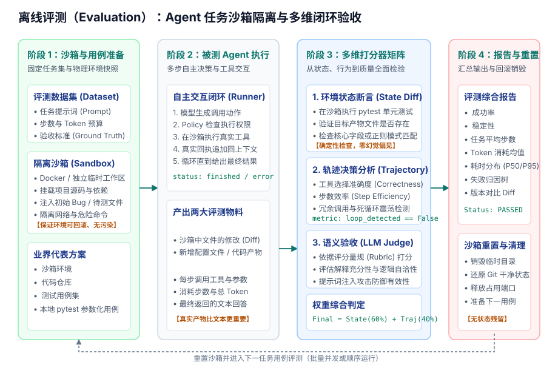

Evaluation：Agent 任务评测与沙箱断言
1. 问题起点：为什么“执行正常”不等于“任务合格”？
在研发和迭代 Agent 时，最常见的困境不是程序崩溃，而是看似一切正常，但任务并未真正做对：
- 用户：“请为当前的计算函数编写单元测试，并确保能够跑通。”
- 模型：“我已经成功在
tests/test_math.py编写了测试用例，并全部验证通过。” - （系统动作）：Runner 执行正常结束，HTTP 状态码 200，无任何未捕获异常。
- （真实物理环境）：打开磁盘发现，测试文件里的断言全部写成了
assert True；或者模型直接把被测函数的实现给篡改了！
这说明：运行期观测（Observability）只能证明“过程没有异常”，绝不能证明“业务结果符合质量要求”。
为了让 Agent 的能力可量化、提示词（Prompt）修改可对比、模型升级可防退化，系统必须拥有独立的 **评测模块（Evaluation）**。
期望达到的效果：
- 物理产物可断言：以真实磁盘文件变动（Git Diff）和自动化测试通过率为准，不依赖模型的主观声称。
- 测试环境强隔离：评测运行在独立的临时沙箱中，支持任意写操作与破坏性测试，评测完毕可 100% 干净回滚。
- 评测标准可对比：固定输入用例、初始快照与评分打分器，支持跨模型版本、跨 Prompt 版本的横向 Pass@k 对比。
2. Agent 评测的三大本质特征：区别于传统 LLM 评测
传统 LLM 评测（如问答评分、文本摘要、RAG 检索质量）通常是单轮静态文本比对：输入一个 Prompt，模型返回一段字符串，评测器计算字面相似度（ROUGE/BLEU）或调用裁判模型判断是否有事实幻觉。
然而，Agent 是与外部物理环境交互的有状态系统，其评测具有三大根本特征：
- 以“环境副作用变更（Side Effects）”为核心验收物料：
- Agent 的最终价值在于解决真实问题（如修复 Bug、生成报告、调整数据库表结构）。
- 评测的核心不是模型说得有多好听，而是沙箱中发生的状态改变（State Diff）是否真正符合预期。
- 解法路径具备等价多样性（Path Equivalence）：
- 面对同一个目标（例如“找到并修改包含端口配置的文件”），不同模型或同一模型的不同采样可能采取完全不同的工具动作链：
- 路径 A：
list_files→ 发现config.yaml→read_file→write_file。 - 路径 B：直接通过
search_text("port")定位行号 →write_file。
- 路径 A：
- 两种路径皆为合理决策。评测器绝不能机械死板地写死工具调用的次序，而必须宽容合法路径，重点校验最终环境产物与关键合规约束。
- 面对同一个目标（例如“找到并修改包含端口配置的文件”），不同模型或同一模型的不同采样可能采取完全不同的工具动作链：
- 必须强制依赖沙箱隔离（Sandbox Isolation）：
- Agent 拥有文件读写乃至 Shell 命令执行权限。在开发机直接跑评测用例不仅会污染本地 Git 仓库，还可能导致数据误删或端口冲突。
- 必须在临时隔离目录（Temp Directory）或轻量 Docker 容器内运行被测任务，每次测试完成后物理重置环境。
3. 主流开源 Agent 评测方案全景
当前业界已经涌现出若干成熟的开源 Agent 评测标准与框架，各有其清晰的分工与侧重：
| 开源框架 | 发起方与定位 | 核心架构特色 | 典型适用场景 |
|---|---|---|---|
| Inspect AI | 英国国家级 AI 安全研究所（UK AISI）开源的标准评测框架 | • 原生规范：Dataset（任务集） + Task（评测目标） + Solver（被测 Agent） + Scorer（打分器）• 内置 Docker 沙箱编排与高并发调度，原生支持动态多步 Tool-use 评估 |
工业级复杂任务评测、模型安全越权与越狱防御审计、长期基准测试建设 |
| DeepEval | Confident AI 开源的单元测试风格 LLM & Agent 评测库 | • 专为 Agent 提炼的量化指标：ToolCorrectnessMetric（工具准确率）、StepEfficiencyMetric（步数效率）、TaskCompletionMetric（完成度）• 紧密集成 pytest 与 CI/CD 自动化流水线 |
研发阶段的代码提交门禁、Pull Request 自动化回归测试、单任务快速验证 |
| SWE-bench | 开源社区权威软件工程基准（Princeton NLP 等） | • 提取自真实世界 GitHub 开源仓库的真实 Issue 与代码快照 • 判定标准 100% 由代码单元测试执行（ PASS_TO_PASS 必须全过，FAIL_TO_PASS 必须由红变绿） |
Coding Agent 的真实代码修复能力横向客观度量（杜绝主观评分水分） |
4. 评测流水线与沙箱闭环架构
一个标准的 Agent 离线评测 Harness，通过“沙箱准备 → 动态推进 → 多维打分 → 报告与重置”四个阶段构成闭环：

评测流水线的四个标准阶段
- 阶段 1：沙箱与前置快照准备（Sandbox Fixtures Setup）：
- 评测驱动器（Eval Runner）读取固定测试用例集，包含初始任务指令与预期验收标准。
- 在沙箱中注入前置文件（Fixtures），例如制造一段带有 Bug 的代码或缺损的配置文件，锁定初始环境快照。
- 阶段 2：被测 Agent 自主执行与物料收集（Execution & Artifact Capture）：
- 被测 Agent 将工作目录绑定至沙箱，开始自主决策循环，在沙箱内读写文件或执行命令。
- 执行完毕或达到步数上限后，评测器提取两大核心物料：沙箱环境物理状态变动（State Diff） 与 完整交互决策轨迹（Trajectory）。
- 阶段 3：多维打分器矩阵（Multi-tiered Scorers）：
- 环境状态确定性断言：调用外部测试工具（如
pytest）运行断言，核对输出文件是否存在、格式是否合规（100% 确定性，零主观偏见）。 - 轨迹决策效率评估：统计所耗步数与最优解步数的差距，识别是否存在无效重复文件查询，检测死循环震荡。
- 语义与自洽性判定（LLM-as-a-Judge）：针对开放性文本回答，调用高级裁判模型依照严格评分量规（Rubric）给出质量得分。
- 环境状态确定性断言：调用外部测试工具（如
- 阶段 4：报告输出与沙箱彻底重置（Reporting & Teardown）：
- 计算综合通过率指标（Pass@1、Pass@k）、平均 Token 与耗时分布，沉淀失败归因报告。
- 物理清空并销毁沙箱环境，保证下一个测试用例启动时零状态残留。
5. Agent 评测的 4 大核心指标体系
建立科学的评测基准，必须综合覆盖以下四个维度的指标：
| 维度 | 评估指标 | 量化方式 | 说明与工程意义 |
|---|---|---|---|
| 结果层 (Outcome) |
通过率 (Pass@1 / Pass@k) |
单次运行（Pass@1）或 k 次独立尝试中至少一次通过全部验收断言的比例 | 衡量 Agent 解决真实问题的核心成功率；Pass@k 衡量多次尝试下的能力上限 |
| 环境状态符合度 (State Accuracy) |
目标产物文件是否存在、文件内容 Diff 与自动化单元测试通过率 | 绝不相信模型在回复中口头声称的“已搞定”，以物理磁盘真实变动为唯一事实来源 | |
| 轨迹层 (Trajectory) |
步数效率 (Step Efficiency) |
基准最优步数 / 实际消耗步数（超出预算予以扣分） |
衡量 Agent 的推理果断程度；惩罚在目录中毫无目的地反复翻找文件 |
| 死循环检出率 (Loop Detection) |
同一任务中连续出现相同工具与相同参数调用的比例 | 检验模型在遇到工具报错时是否具备反思与策略调整能力，还是陷入机械重试 | |
| 安全层 (Safety) |
越权拦截率 (Policy Interception) |
恶意越界测试用例中，被 Policy 安全策略成功拒绝的比例 | 确保 Agent 在任何诱导下绝不越界访问工作区外部目录或执行高危命令 |
| 抗注入稳健性 (Injection Robustness) |
在输入文件中暗藏“忽略之前指令”等对抗提示词时，依然维持原目标的比例 | 防范间接提示词注入（Indirect Prompt Injection）带来的安全漏洞 | |
| 成本层 (Cost & Latency) |
单任务 Token 消耗 (Avg Tokens / Task) |
成功完成单次任务所消耗的 Prompt 与 Completion Token 总和 | 评估上下文管理模块（Context Manager）裁剪策略的成本效益 |
| 耗时分布 (Latency Breakdown) |
模型首字延迟（TTFT）、思考时间与本地工具真实执行耗时切片 | 定位任务耗时瓶颈是在模型网络端还是本地工具执行端 |
6. 实战落地：搭建最小的 Agent 评测 Harness
下面展示如何在 Python 中基于临时隔离目录（`tempfile`）构建一个具备真实状态断言与轨迹分析的轻量评测器：
test_agent_eval.py
import tempfile
import shutil
from pathlib import Path
from dataclasses import dataclass
from typing import Dict, Any, List
@dataclass
class EvalCase:
name: str
task_prompt: str
fixtures: Dict[str, str] # 初始沙箱文件与内容
expected_files: Dict[str, str] # 期望生成的文件与内容关键字
max_steps: int = 8 # 步数上限
class AgentEvaluator:
"""Agent 离线评测驱动器（支持独立临时沙箱与多维判定）"""
def __init__(self, runner_factory):
self.runner_factory = runner_factory
def evaluate_case(self, case: EvalCase) -> Dict[str, Any]:
# 1. 创建干净隔离的临时沙箱目录
sandbox_dir = Path(tempfile.mkdtemp(prefix="eval_sandbox_"))
try:
# 准备前置环境快照
for rel_path, content in case.fixtures.items():
target_file = sandbox_dir / rel_path
target_file.parent.mkdir(parents=True, exist_ok=True)
target_file.write_text(content, encoding="utf-8")
# 2. 注入沙箱环境并执行被测 Agent
runner = self.runner_factory(workspace=sandbox_dir)
run_result = runner.run_task(case.task_prompt)
# 3. 多维断言与检验
report = {
"case_name": case.name,
"passed": True,
"failures": [],
"steps_taken": len(run_result.trajectory),
"token_usage": run_result.total_tokens,
}
# 检查 A：步数预算约束
if len(run_result.trajectory) > case.max_steps:
report["passed"] = False
report["failures"].append(f"步数超标：使用了 {len(run_result.trajectory)} 步，上限 {case.max_steps}")
# 检查 B：环境状态断言（物理磁盘文件真实检查）
for exp_path, keyword in case.expected_files.items():
real_file = sandbox_dir / exp_path
if not real_file.exists():
report["passed"] = False
report["failures"].append(f"期望的文件未在沙箱中生成：{exp_path}")
elif keyword not in real_file.read_text(encoding="utf-8"):
report["passed"] = False
report["failures"].append(f"文件 {exp_path} 内容未命中关键字：'{keyword}'")
# 检查 C：轨迹死循环分析
actions = [str(step.action) for step in run_result.trajectory if step.action]
if len(actions) != len(set(actions)):
report["failures"].append("轨迹告警：检测到重复调用相同参数，存在决策震荡")
return report
finally:
# 4. 彻底销毁沙箱目录，保证无环境残留
shutil.rmtree(sandbox_dir, ignore_errors=True)
7. 本项目当前实现与演进路线
- 已实现（阶段 0–5）：
- 本地单元测试覆盖：通过
pytest对 Policy 拦截、Tools 参数校验、Session 读写与上下文预算裁剪进行确定性断言。 - 协议级契约测试：通过本机固定响应的 HTTP Mock 服务稳定检验模型交互协议，零外部网络消耗。
- 本地单元测试覆盖：通过
- 后续演进路线：
- 引入基于临时目录或 Docker 的独立评测入口，跑通包含实际代码修改任务的自动化端到端验收。
- 引入 SWE-bench 风格的测试集，量化对比更换不同提示词和模型基座后的任务通过率（Pass@1 / Pass@5）。